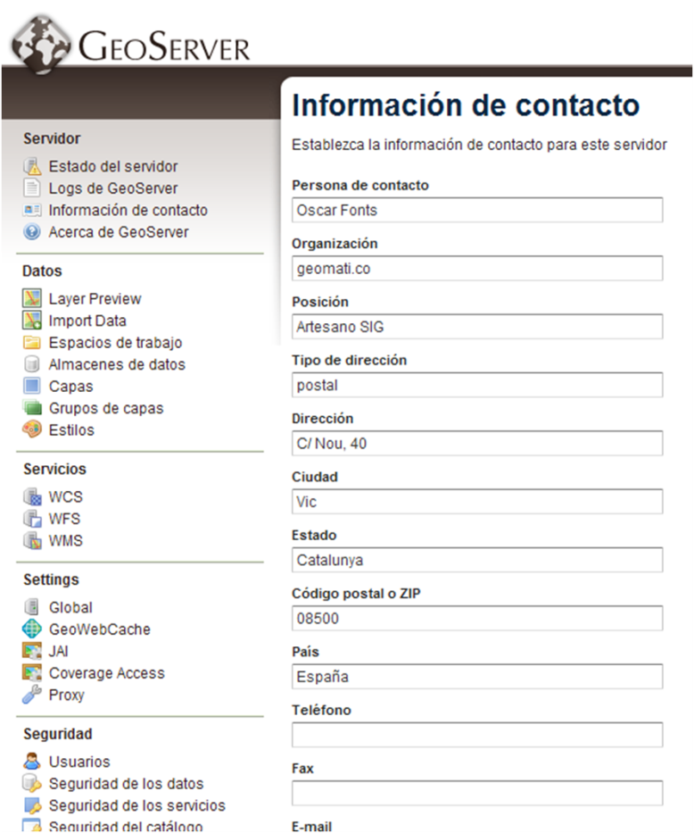
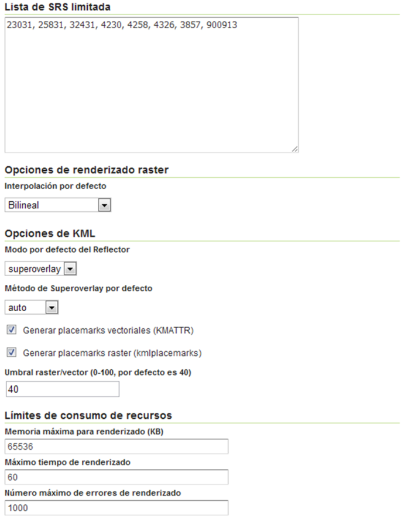
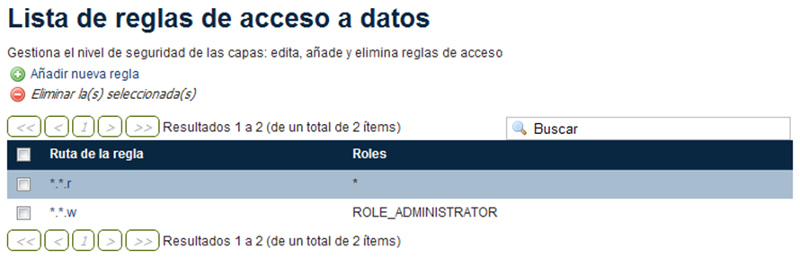
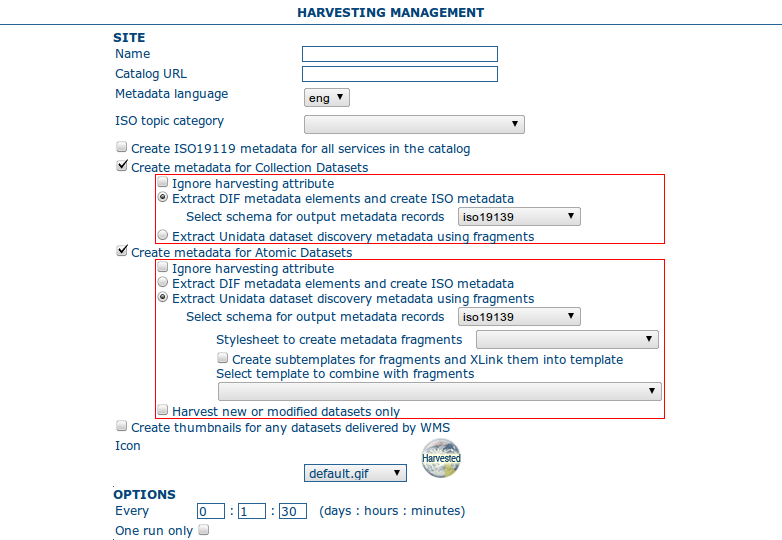
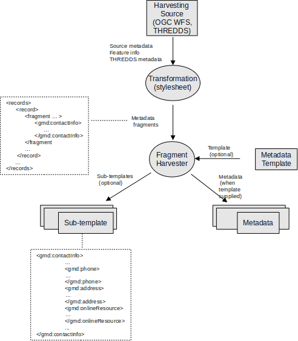

Primero instalaremos la versión necesaria de Java, en este caso la 6. Para ello teclearemos en la terminal:
$ sudo apt-get install sun-java6-jdk sun-java6-bin sun-java6-jre
Comprobaremos que Ubuntu está utilizando la versión que nos interesa de Java y no la que lleva instalada por defecto. Para ello indicamos en la terminal:
$ java -version
que nos mostrará el mensaje:
java version "1.6.0_26"
Java(TM) SE Runtime Environment (build 1.6.0_26-b03)
Java HotSpot(TM) Client VM (build 20.1-b02, mixed mode, sharing)
indicando nuestra versión de Java. En caso contrario será necesario instalar nuestra vesión como alternativa. Para ello primero comprobamos las alternativas que está utilizando. Accedemos a la ruta:
$ cd /etc/alternatives
y mostramos las que nos interesan:
$ ls -la ja*
podremos observar que alternativa de java está disponible:
java -> /usr/lib/jvm/java-6-openjdk/jre/bin/java
para modificar esta debemos primero instalar nuestra versión de java como alternativa:
$ sudo update-alternatives --install /usr/bin/java java /usr/lib/jvm/java-6-sun/jre/bin/java 1
y después asignaremos esta alternativa:
$ sudo update-alternatives --set java /usr/lib/jvm/java-6-sun/jre/bin/java
ahora podemos comprobar a que máquina de Java apunta:
java -> /usr/lib/jvm/java-6-sun/jre/bin/java
Warning
Si ya se ha instalado java mediante apt-get (apartado anterior), esto no hace falta.
Primero descargaremos la versión de Java que nos interesa desde:
http://www.oracle.com/technetwork/java/javase/downloads/jdk-6u27-download-440405.html
Accedemos a la carpeta de descarga del archivo y modificamos su permiso de ejecución:
$ sudo chmod +x <nombre del archivo>
y ejecutamos:
$ sudo ./<nombre del archivo>
este paso nos solicitará nuestra confirmación y descomprimirá los archivos en una carpeta en el mismo directorio donde lo hayamos ejecutado. Movemos esa carpeta a una localización mas acorde:
$ mv <ruta de la carpeta> /usr/lib/jvm
después realizaremos los mismos pasos para asignar la alternativa que en el caso anterior.
Referencias
Abrimos un terminal y tecleamos:
$ sudo apt-get install tomcat6
de esta manera instalaremos Tomcat. Para comprobar que la instalación es correcta:
http://localhost:8080
apareciendo el mensaje It works!. Esta instalación de Tomcat crea la siguiente estructura de directorios que mas adelante nos hará falta conocer:
Directorio de logs; logs --> /var/lib/tomcat6/logs
Directorio de configuracion; conf --> /var/lib/tomcat6/conf
Directorio de aplicaciones; webapps --> /var/lib/tomcat6/webapps
La instalación creara un usuario y un grupo, tomcat6::tomcat6. Para arrancar/parar o reiniciar esta instancia de Tomcat:
$ sudo /etc/init.d/tomcat6 [start|stop|restart]
Para acceder al manager de Tomcat primero instalaremos la aplicación necesaria para gestionar el servidor. Para ello tecleamos desde una terminal:
$ sudo apt-get install tomcat6-admin
Una vez instalado incluiremos en el archivo /var/lib/tomcat6/conf/tomcat-users.xml el rol y el usuario necesario para acceder a la aplicación. Para ello incluiremos bajo la raiz <tomcat-users> lo siguiente:
<role rolename="tomcat"/>
<role rolename="manager"/>
<user username="icos" password="XXXX" roles="tomcat,manager"/>
Reiniciaremos el servidor y probamos el acceso a través de:
http://localhost:8080/manager/html
e introduciremos los datos incluidos en el fichero tomcat-users.xml
La configuración de GeoServer se hará entrando como admin en: http://localhost:8080/geoserver/web/
Tanto la interfaz web de GeoNetwork como el Data Portal utilizan de un par de capas de base:
La forma más cómoda de incorporar estas capas es a partir de una distribución con instalador de GeoNetwork. El instalador incluye un directorio geoserver_data que puede copiarse tal cual en algún lugar del servidor. El usuario tomcat6 debe tener permisos de escritura sobre todo el contenido del directorio:
$ chown -R tomcat6:tomcat6 .
Además, debe editarse el parámetro GEOSERVER_DATA_DIR dentro de la instalación de GeoServer, en WEB-INF/web.xml:
<web-app>
...
<context-param>
<param-name>GEOSERVER_DATA_DIR</param-name>
<param-value>/home/icos/data/geoserver_data</param-value>
</context-param>
...
</web-app>
Warning
La copia directa del geoserver_data se ha probado con las versiones de GeoNetwork 2.6.4 y GeoServer 2.1.x.
En Servidor => Información de Contacto, pondremos los datos de contacto que queremos que aparezcan en los documentos de GetCapabilities de los servicios OGC.
Por ejemplo:
- Persona de contacto: Jordi Sorribas
- Organización: Unidad de Tecnología Marina, CSIC
- Posición: Responsable servicios telemáticos
- Tipo de dirección: postal
- Dirección: Pg. Maritim de la Barceloneta 37-49
- Ciudad: Barcelona
- Estado o provincia: Barcelona
- Código postal o ZIP: E-08003
- País: Spain
- Teléfono: (+34)932309500
- Fax: (+34)932309555
- Correo electrónico: sorribas at utm.csic.es
En caso de querer publicar nuestros propios datos, en algún momento deberemos proceder al borrado de los datos iniciales que vienen de ejemplo. Para evitar conflictos, deben borrarse por este orden:
- Datos => Grupos de capas
- Datos => Capas
- Datos => Almacenes de datos
- Datos => Espacios de trabajo
- Datos => Estilos (excepto los estilos ‘point’, ‘line’, ‘polygon’ y ‘raster’, que deben conservarse porque son los que se usarán al publicar nuevas capas de datos)
En Servicios => WCS, poner la información (para los metadatos del servicio) que se crea necesaria: responsable de mantenimiento, recurso en línea, título, resumen, tasas, restricciones de acceso, palabras clave. Además conviene tener en cuenta:
- Procesado de coberturas: Para una calidad óptima, utilizar submuestreo y overviews de mayor resolución.
- Imponer limitaciones en el consumo de recursos para evitar peticiones absurdamente grandes. Por ejemplo, limitar la memoria a 65 536 Kb (64 Mb) en ambos casos.
En Servicios => WFS, rellenar también los metadatos del servicio. Además:
- Features => Máximo número de features: Esto también impedirá peticiones absurdamente grandes. Por ejemplo, se puede limitar a 100 000.
En Servicios => WMS, rellenar también los metadatos del servicio. Además:

- Lista de SRS limitada: Para evitar que el GetCapabilities contenga todos los posibles SRS (cientos de ellos), es recomendable poner aquí la lista de SRS que es razonable ofrecer. Dependiendo del área geográfica de los datos, esta lista puede cambiar, pero se recomienda que contenga:
- Proyección UTM en los husos que corresponda. Para Europa, será habitual usar los datums ED50, ETRS89 y WGS84. Por ejemplo, para el Huso UTM 31N, serían: 23031, 25831, 32431.
- Latitud, longitud en WGS84 (las “coordenadas típicas” de los no profesionales): Es decir, 4326.
- La “proyección” de Google Maps. Tiene dos códigos EPSG: el oficial (3857), y el no oficial (900913).
- Opciones de renderizado raster: Escoger método de interpolación según la calidad deseada:
- Bicúbica (máxima calidad, mayor tiempo de respuesta)
- Bilineal (calidad media, tiempo de respuesta medio)
- Vecino más próximo (calidad baja, velocidad alta)
- Opciones de KML. Se recomienda estos valores:
- Modo per defecto del reflector: Superoverlay.
- Método de superoverlay: Auto.
- Generar placemarks de todo tipo.
- Umbral raster/vector: 40.
- Límites en el consumo de recursos:
- Memoria máxima para renderizado (KB): 65 536.
- Máximo tiempo de renderizado (s): 60.
- Máximo número de errores de renderizado: 1000.
Configuración de la filigrana: Permite añadir un logo o “firma” en cada respuesta de GetMap. No se recomienda utilizarlo, porque es muy intrusivo (por ejemplo, da al traste con cualquier técnica de teselado).
En Configuración Gobal, poner:
- Cantidad de decimales: Si se trabaja en coordenadas geográficas y con precisiones del orden de un metro (escalas no mayores que 1: 5 000), puede cambiarse este valor a 6.
- Codificación de caracteres: Como regla general para cualquier aplicación informática, se recomienda, siempre que se pueda, usar UTF-8. Es la codificación universal, que incorpora todos los alfabetos mundiales.
- Perfil del registro: En un servidor de verdad, se cambiaría a PRODUCTION_LOGGING.properties
Se propone aquí una configuración de seguridad simple, donde cualquiera tenga acceso de lectura, pero sólo el administrador pueda hacer cambios en los datos. Obviamente, esta configuración puede cambiarse para hacerla tan compleja como se quiera, creando diversos grupos de usuarios con diversos niveles de acceso a los datos y servicios.
Seguridad de los datos

- Conservar regla de lectura *.*.r para todos (*).
- Cambiar regla de escritura *.*.w para que sólo tenga derechos de edición ROLE_ADMINISTRATOR.
Seguridad del catálogo
Se recomienda el método CHALLENGE, el más compatible con diversos clientes.
Para más información sobre cómo diseñar y configurar entornos de producción reales, y sus implicaciones en seguridad y rendimiento, consultar el documento de OpenGeo Geoserver In Production: http://opengeo.org/publications/geoserver-production/
En este apartado se explicará la instalación y configuración del servidor Thredds. En primer lugar necesitaremos descargarnos la versión adecuada del servidor, en nuestro caso será la versión 4.2.8:
ftp://ftp.unidata.ucar.edu/pub/thredds/4.2/thredds.war
Descargamos un archivo .war que deberemos desplegar en nuestro servidor Tomcat. Antes de ello debemos efectuar unas configuraciones previas. Crearemos una variable de entorno que apunte a nuestro directorio de Tomcat. Editamos el archivo .bashrc de la sesión con la que estemos trabajando. Este archivo lo encontraremos en:
$ cd ~
Warning
Si se ha isntalado el tomcat vía apt-get, y se inicia mediante /etc/init.d/tomcat6, entonces debe editarse dicho fichero y poner en $JAVA_OPTS los valores que corresponda, en lugar de editar .bashrc y setenv.sh
Modificamos el archivo .bashrc con un editor de texto:
$ nano .bashrc
e incluiremos la siguiente linea:
export TOMCAT_HOME=/usr/share/tomcat6
Aplicamos los cambios escribiendo en el terminal:
$ source .bashrc
y comprobamos que aparece nuestra variable:
$ echo $TOMCAT_HOME
que nos mostrará el valor que hemos introducido en el archivo .bashrc, /usr/share/tomcat6
Crearemos un script en la carpeta bin del Tomcat ($TOMCAT_HOME/bin) que permita a este encontrar unas determinadas variables que necesitará para arrancar Thredds:
$ sudo nano $TOMCAT_HOME/bin/setenv.sh
e incluiremos lo siguiente:
#!/bin/sh
#
# ENVARS for Tomcat and TDS environment
#
JAVA_HOME="/usr/lib/jvm/java-6-sun"
export JAVA_HOME
JAVA_OPTS="-Xmx1500m -Xms512m -XX:MaxPermSize=180m -server -Djava.awt.headless=true -Djava.util.prefs.systemRoot=$CATALINA_HOME/content/thredds/javaUtilPrefs"
export JAVA_OPTS
CATALINA_HOME="/usr/share/tomcat6"
export CATALINA_HOME
Donde le indicamos la memoria máxima 1500 en caso de sistemas de 32-bit o 4096 o más en sistemas de 64-bit, y en caso de usar WMS con Thredds debemos añadirle la localización de javaUtilPrefs asignandole a -Djava.util.prefs.systemRoot la ruta. Una vez realizado esto, reiniciaremos Tomcat y comprobamos que los cambios se han producido:
$ ps -ef | grep tomcat
que nos mostrará:
tomcat6 7376 1 45 14:48 ? 00:00:03 /usr/lib/jvm/java-6-sun/bin/java -Djava.util.logging.config.file=/var/lib/tomcat6/conf/logging.properties
-Xmx1500m -Xms512m -XX:MaxPermSize=180m -server -Djava.awt.headless=true -Djava.util.prefs.systemRoot=/usr/share/tomcat6/content/thredds/javaUtilPrefs
-Djava.util.logging.manager=org.apache.juli.ClassLoaderLogManager -Djava.endorsed.dirs=/usr/share/tomcat6/endorsed -classpath /usr/share/tomcat6/bin/bootstrap.jar
-Dcatalina.base=/var/lib/tomcat6 -Dcatalina.home=/usr/share/tomcat6 -Djava.io.tmpdir=/tmp/tomcat6-tmp org.apache.catalina.startup.Bootstrap start
Donde podemos observar los valores que hemos introducido en nuestro script y que Tomcat ha incluido en el arranque.
Antes de realizar el despliegue de Thredds crearemos la carpeta donde la instalación crea todos los archivos necesarios para la instalación y configuración del mismo. Para ello navegamos hasta el directorio donde el despliegue del war busca dicha carpeta por defecto:
$ cd /var/lib/tomcat
y creamos la carpeta con el nombre por defecto:
$ mkdir content
seguidamente le asignaremos permisos al usuario y grupo tomcat6:
$ sudo chmod tomcat6:tomcat6 content
Una vez hecho esto procederemos al despliegue de Thredds bien desde la pestaña manager de Tomcat, o copiando directamente el archivo thredds.war en la carpeta webapps de nuestra instancia de Tomcat. Es recomendable realizar un seguimiento de los cambios producidos en el servidor para comprobar que el despliegue de Thredds se realiza correctamente, para ello ejecutaremos previamente en una consola:
$ tail -f /var/lib/tomcat6/logs/catalina.out
de esta manera veremos por consola los mensajes que nos envia Tomcat. Para comprobar que la instalación ha ido correctamente:
http://localhost:8080/thredds
y accederemos al catalogo de ejemplo que viene en Thredds por defecto.
Desde el Remote Management de Thredds podemos acceder a información acerca del estado del servidor, reiniciar catálogos... Para porder acceder a este deberemos previamente configurar Tomcat para que permita el acceso mediante SSL. Lo primero que haremos será crear un certificado autofirmado en el servidor (keystore) y configuraremos Tomcat para utilizar un conector que permita el acceso mediante este protocolo.
Warning
En lugar de utilizar ssl (en nuestro caso, el puerto SSL 443 no es accessible desde fuera), puede editarse el web.xml para cambiar las restricciones de acceso de este servicio de “CONFIDENTIAL” a “NONE”.
Lo primero que haremos será utilizar la herramienta keytool para generar el certificado. Esta herramienta viene suministrada con el JDK de Java y la encontraremos en:
$ $JAVA_HOME/bin/
y la ejecutaremos indicandole la ruta donde generaremos el archivo .keystore ($USER_HOME/.keystore por defecto):
$JAVA_HOME/bin/keytool -genkey -alias tomcat -keyalg RSA -validity 365 -keystore ~/.keystore
y responderemos a las cuestiones que plantea. Respecto al password, por defecto Tomcat tiene definida changeit como contraseña por defecto, así que deberemos modificar en los valores del conector el valor de esta, indicandole la que hayamos definido en la creación del certificado. Para introducir esta y modificar algunos otros valores necesarios modificaremos el archivo server.xml de nuestra instancia de Tomcat:
$ sudo nano /etc/tomcat6/server.xml
descomentaremos las lineas que activan el conector:
<!-- Define a SSL Coyote HTTP/1.1 Connector on port 8443 -->
<Connector port="8443"
maxThreads="150" minSpareThreads="25" maxSpareThreads="75"
enableLookups="false" disableUploadTimeout="true"
acceptCount="100" debug="0" scheme="https" secure="true"
clientAuth="false" sslProtocol="TLS" keystoreFile="<ruta al .keystore creado>" keystorePass="<contraseña al crear el keystore>"/>
introduciendo la ruta al archivo .keystore creado e indicandole la contraseña que hemos indicado en la creación del mismo. Una vez realizada esta modificación, reiniciaremos el Tomcat comprobaremos que los cambios se han realizado correctamente accediendo a:
http://localhost:8443
Finalmente, para poder acceder al gestor remoto del Thredds deberemos crear el usuario y el rol en Tomcat que permite este acceso. Para ello modificaremos el archivo tomcat-users.xml incluyendo lo siguiente:
<role rolename="tdsConfig"/>
<user username="<nombre usuario>" password="<password usuario>" roles="tdsConfig"/>
Está será la clave de acceso del usuario, por lo que no es necesario que sea igual a la que se ha definido en el conector de Tomcat. Reiniciaremos el Tomcat de nuevo y comprobamos el acceso a través de:
http://localhost:8443/thredds/admin/debug
Referencias
Thredds tiene por defecto los servicios WMS y WCS desactivados. Para poder hacer uso de estos servicios tendremos que activarlos. Deberemos modificar el archivo threddsConfig.xml que encontraremos en la carpeta content de la instalación de Thredds. Modificaremos el archivo activando los servicios descomentando las etiquetas WMS y WCS y modificando el valor de la etiqueta allow a true:
<WMS>
<allow>true</allow>
</WMS>
para el servicio WMS y:
<WCS>
<allow>true</allow>
</WCS>
para el WCS. Ahora ya podremos indicar en nuestros catálogos que los servicios WMS y WCS se encuentran activos.
Referencias
Desde la versión 4.2.4 de Thredds se incluye el paquete ncISO que permite mostrar los metadatos de los datasets como fichas ISO. Para activar dicho servicio será necesario realizar unas modificaciones en el archivo threddsConfig.xml como en el caso de los servicios anteriores. Buscaremos en el archivo la linea que hace referencia el servicio ncISO las descomentaremos y modificaremos el valor a true para los tres casos:
<NCISO>
<ncmlAllow>true</ncmlAllow>
<uddcAllow>true</uddcAllow>
<isoAllow>true</isoAllow>
</NCISO>
En caso de que estas lineas no apareciesen en nuestro archivo las creariamos. Después debemos acceder al archivo web.xml de nuestra instalación de Thredds y descomentaremos las lineas que activan el servicio ncISO de manera que quede así:
<filter-mapping>
<filter-name>RequestQueryFilter</filter-name>
<servlet-name>metadata</servlet-name>
</filter-mapping>
<servlet>
<servlet-name>metadata</servlet-name>
<servlet-class>org.springframework.web.servlet.DispatcherServlet</servlet-class>
<load-on-startup>3</load-on-startup>
</servlet>
<servlet-mapping>
<servlet-name>metadata</servlet-name>
<url-pattern>/ncml/*</url-pattern>
</servlet-mapping>
<servlet-mapping>
<servlet-name>metadata</servlet-name>
<url-pattern>/uddc/*</url-pattern>
</servlet-mapping>
<servlet-mapping>
<servlet-name>metadata</servlet-name>
<url-pattern>/iso/*</url-pattern>
</servlet-mapping>
Ahora será posible añadir estos servicios a nuestros catálogos.
Referencias
Una vez que hemos activado los servicios OGC/ISO será posible la utilización de estos en nuestros catálogos. Thredds utiliza archivos catalog.xml para definir las carpetas donde se almacenan los datasets, así como la estructura que tendrá el arbol que muestra dichos datasets. También se encarga de definir los servicios que están disponibles en el servidor y que permite el acceso a estos datasets.
Existe la posibilidad de definir un tipo de servicio compound que lo que nos permite es asignar todos los servicios activos a los datasets que incluyan este servicio. Para definir esto, en nuestro catalog.xml incluiremos el siguiente elemento:
<service name="all" base="" serviceType="compound">
<service name="odap" serviceType="OpenDAP" base="/thredds/dodsC/" />
<service name="http" serviceType="HTTPServer" base="/thredds/fileServer/" />
<service name="wcs" serviceType="WCS" base="/thredds/wcs/" />
<service name="wms" serviceType="WMS" base="/thredds/wms/" />
<service name="ncml" serviceType="NCML" base="/thredds/ncml/"/>
<service name="uddc" serviceType="UDDC" base="/thredds/uddc/"/>
<service name="iso" serviceType="ISO" base="/thredds/iso/"/>
</service>
así podremos indicar a los datasets que utilicen este servicio compuesto:
<dataset ID="sample" name="Sample Data" urlPath="sample.nc">
<serviceName>all</serviceName>
</dataset>
A través del servicename es como enlazaremos el servicio con los datasets. Podemos reinicializar nuestros catálogos accediendo a través de la aplicación TDS Remote Management.
Referencias
Para el Data Portal será necesario utilizar una versión de GeoNetwork 2.7 o superior, debido a los procesos que son necesarios para realizar el harvesting. Una vez descargada la versión de GeoNetwork indicada, se desplegará en nuestra instancia de Tomcat bien desde el manager o bien moviendo el archivo .war descargado a la carpeta webapps de servidor. Será necesario modificar los permisos de la carpeta /var/lib/tomcat6 para que el usuario tomcat6 que ejecuta el despliegue tenga permisos a la hora de desplegar GeoNetwork y pueda crear en dicha carpeta los archivos necesarios para la instalación de GeoNetwork. Para ello ejecutamos:
$ sudo chown tomcat6:tomcat6 /var/lib/tomcat6
y haremos el despliegue de GeoNetwork. Si tenemos monitorizada la salida del archivo de log catalina.out podremos comprobar que el despliegue se ha realizado de manera correcta si aparece un mensaje como:
2011-08-22 18:21:29,004 INFO [jeeves.engine] - === System working =========================================
Podremos acceder a nuestro GeoNetwork a través de:
http://localhost:8080/geonetwork
GeoNetwork permite, a partir de su versión 2.7, realizar procesos de harvesting a servidores Thredds. De esta manera es posible incorporar en nuestro servidor de catálogo la información de los metadatos de los datasets que tengamos publicados a través de nuestro servidor Thredds. Para configurar correctamente este proceso de Harvesting es necesario realizar dos operaciones diferentes:
Para dar de alta un proceso de harvesting debemos acceder a GeoNetwork como administradores y dirigirnos a la pestaña de Administration. Desde allí nos dirigiremos a Harvesting Management. Esto nos abrirá una nueva ventana desde donde podemos crear nuestro proceso de harvesting. Para ello pulsaremos sobre Add y elegiremos del desplegable el Thredds Catalog para después volver a pulsar Add. Rellenaremos los campos como se indica a continuación:
Name; nombre que le queremos dar al proceso
Catalog URL; URL del catalog de Thredds. Importante que la dirección apunte al .xml:
http://localhost:8080/thredds/catalog.xml
Create ISO19119 metadata for all services in the catalog; crearia una plantilla ISO19119 para todos los servicios que hayamos definido en nuestro catalog.xml
Create metadata for Atomic Datasets; Con las opciones parecidas al caso anterior, generará un registro por cada dataset que exista en nuestro servidor Thredds. Cuenta con la opción Harvest new or modified datasets only que indica que cuando se repita el proceso de harvesting solo se incluyan aquellos datasets nuevos o que hayan sido modificados.
Create thumbnails for any datasets delivered by WMS; crea iconos para los datasets que tengan activado el servicio WMS y permite elegir el icono.
Every; indicaremos la frecuencia con que deseamos que se repita el proceso de harvest o si solo queremos que se repita una vez.
Una vez definidas estos parametros pulsaremos sobre Save y podremos observar como en la ventana anterior aparece nuestro proceso. Seleccionandole podremos acceder a las diferentes operaciones que se nos ofrece. Si pulsamos sobre Run ejecutaremos el harvest. Una vez finalizado, situando el puntero del ratón sobre el icono Status visualizaremos un resumen del proceso.
Para generar la información que necesitamos para el Data Portal, debemos configurar el proceso de harvest de manera que este extraiga la información asociada a los datasets configurados en el servidor Thredds siguiendo la NetCDF Attribute Convention for Dataset Discovery. Para ello a partir de la versión 2.7 de GeoNetwork se implementa la posibilidad de utilizar fragmentos para la extracción y reutilización de esta información extraida en el proceso de harvest. Esta posibilidad solo está disponible para extracción de información de catalogos Thredds y operaciones getFeature del protocolo WFS. Utilizando los fragmentos podremos extraer exclusivamente la información que requiere el Data Portal para el proceso de busquedas implementado a través de GeoNetwork. Podremos definir plantillas con los fragmentos que nos interesan que serán guardados en GeoNetwork como subplantillas (subtemplates), a seleccionar en las opciones del proceso de harvest, y estos fragmentos que generarán estas subplantillas serán insertados en una plantilla que generará el registro (plantilla base) con el metadato en GeoNetwork.
Para tener disposición de las plantillas y subplantillas hemos de crear estas en la carpeta del esquema que vayamos a utilizar. Estas carpetas se encuentran en:
$TOMCAT_HOME/webapps/geonetwork/xml/schemas/
Para el caso del Data Portal utilizaremos el esquema ISO19139, por lo que será necesario crear la plantilla base en la carpeta templates del esquema iso19139:
$TOMCAT_HOME/webapps/geonetwork/xml/schemas/iso19139/templates
allí encontraremos la plantilla base que viene por defecto con la versión de GeoNetwork que podremos utilizar para crear la nuestra propia. Dentro de la misma carpeta del esquema, encontraremos una carpeta convert en la que aparece la carpeta ThreddsTofragments. En esta localización será donde incluiremos nuestras subplantillas que generarán los fragmentos:
$TOMCAT_HOME/webapps/geonetwork/xml/schemas/iso19139/convert/ThreddsToFragments
Una vez que hayamos incluido nuestros archivos en las carpetas indicadas, deberemos cargar las plantillas del esquema en GeoNetwork. Para ello, desde una sesión como administrador, nos dirigiremos a la ventana Administration y en la sección de Metadata & Template seleccionaremos el esquema iso19139 y le indicaremos Add templates. Realizado esto, podremos comprobar que en las opciones dentro de la ventana de Harvesting Management Stylesheet to create metadata fragments y Select template to combine with fragments podremos encontrar las plantillas que hemos creado. El nombre de estas plantillas serán el nombre del archivo para las subplantillas y el valor del tag que tenga asociado el id id="thredds.title" dentro de la plantilla base.
Para la creación de la plantilla base tomaremos como plantilla de partida la que GeoNetwork incluye por defecto en su versión 2.7. Esta, como hemos comentado se encuentra en:
$TOMCAT_HOME/webapps/geonetwork/xml/schemas/iso19139/templates/thredds-harvester-unidata-data-discovery.xml
Esta es la plantilla base que se generará por cada registro que se incluya en GeoNetwork. Se trata de una plantilla tipica de la ISO19139. La diferencia fundamental, es que asociado a determinados elementos de la ISO, aparece el atributo id=<identificador del fragmento>. Esta es la manera en que se indica que durante el proceso de creación del metadato en GeoNetwork, busque el identificador en la subplantilla que hemos seleccionado al crear el proceso de harvest. Por eso para crear la plantilla base, lo único que debemos hacer es sustituir los elementos que estemos interesados en crear mediante fragmentos, por una llamada a través del id al del fragmento que estamos interesados en incluir:
<gmd:date id="thredds.resource.dates"/>
<gmd:abstract id="thredds.abstract"/>
<gmd:credit id="thredds.credit"/>
<gmd:descriptiveKeywords id="thredds.keywords"/>
<gmd:resourceConstraints id="thredds.use.constraints"/>
<gmd:aggregationInfo id="thredds.project"/>
y en la subplantilla definiremos los fragmentos y les indicaremos el id al que la pantilla hace referencia.
La subplantilla ha de definirse en la carpeta:
$TOMCAT_HOME/webapps/geonetwork/xml/schemas/iso19139/convert/ThreddsToFragments
Una vez que hemos definido los id en la plantilla base, debemos crear estos en la subplantilla. Para ello podemos partir de alguna de los XSL que vienen suministrados en la versión de GeoNetwork. Estas subplantillas, a diferencia de las plantillas base, se tratan de hojas XSL que serán ejecutadas durante la creación del metadato.
Si abrimos una plantilla de las suministradas, por ejemplo:
$TOMCAT_HOME/webapps/geonetwork/xml/schemas/iso19139/convert/ThreddsToFragments/netcdf-attributes.xsl
comprobaremos que se trata de un ejemplo normal de plantilla xsl, con su encabezado, definición de namespaces, y como diferencia se puede observar la aparición de unos elementos:
<replacementGroup id="thredds.supplemental">
<fragment uuid="{util:toString(util:randomUUID())}" title="{concat($name,'_contentinfo')}">
...
</fragment>
</replacementGroup>
Esta es la manera de definir el fragmento. El atributo id que acompaña al elemento se trata del id al que se hace referencia en la plantilla base, y todos los elementos que se incluyan dentro del fragmento serán procesados en la creación del metadato e incluidos en la plantilla.
Instalar PostgreSQL:
$ sudo apt-get install postgresql
Comprobar que está habilitado el servicio de conexión vía TCP/IP para localhost, y el puerto. En postgresql.conf:
listen_addresses = 'localhost'
port = 5432
Y en pg_hba.conf:
host all all 127.0.0.1/32 md5
Si se ha modificado alguno de estos ficheros, reiniciar el servicio:
$ sudo /etc/init.d/postgresql-8.4 restart
Obtener los scripts create_db.sql y create_schema.sql. Abrir el script create_db.sql y poner un password al usuario “icos”. Luego, ejecutar el script:
$ sudo -u postgres psql < create_db.sql
A continuación creamos el esquema:
$ psql -U icos -d dataportal < create_schema.sql
Cambiar los valores para:
| [1] | http://www.keopx.net/blog/cambiar-las-preferencias-de-java-alternatives-en-debianubuntu |
| [2] | http://www.guia-ubuntu.org/index.php?title=Java |
| [3] | http://tomcat.apache.org/tomcat-6.0-doc/ssl-howto.html |
| [4] | http://www.unidata.ucar.edu/projects/THREDDS/tech/tds4.2/tutorial/AddingServices.html |
| [5] | http://www.unidata.ucar.edu/projects/THREDDS/tech/tds4.2/reference/ncISO.html |
| [6] | http://www.unidata.ucar.edu/projects/THREDDS/tech/tds4.1/reference/RemoteManagement.html |
| [7] | http://www.unidata.ucar.edu/projects/THREDDS/tech/tds4.2/tutorial/ConfigCatalogs.html |
| [8] | http://www.unidata.ucar.edu/projects/THREDDS/tech/catalog/v1.0.2/InvCatalogSpec.html |
| [9] | http://geonetwork-opensource.org/manuals/trunk/users/admin/harvesting/index.html#harvesting-fragments-of-metadata-to-support-re-use |
| [10] | http://www.unidata.ucar.edu/software/netcdf-java/formats/DataDiscoveryAttConvention.html |
{kind=link}
{kind=link}
{kind=link}
{kind=link}
{kind=link}